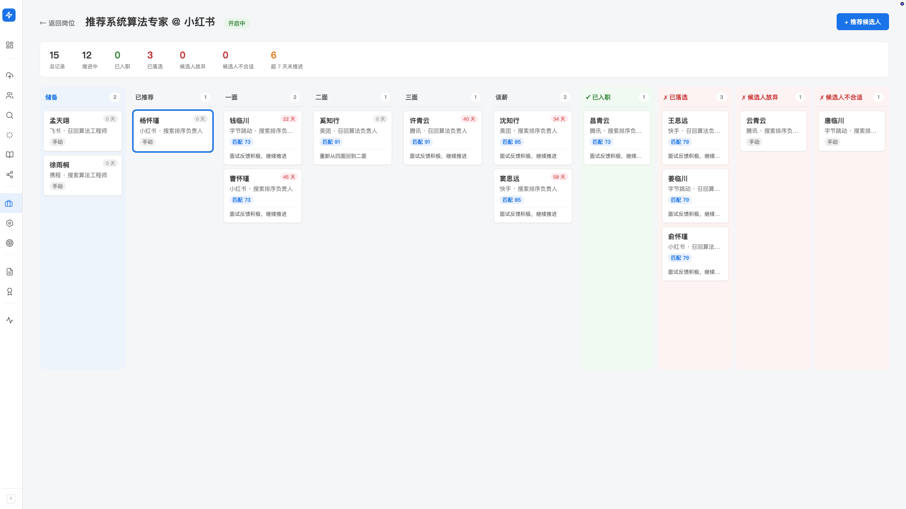

推进看板
每个岗位有一个独立看板，候选人 × 岗位 是一张卡片，拖拽即可改阶段。 客户突然问「上周推到字节那个张工到哪一步了」—— 看板 3 秒就答得上。 所有变化永久存档，半年后还能查到当时为什么落选。
看板入口在岗位详情页（每个岗位一个独立看板）。
先理清核心概念
- 看板：一个岗位一个看板。所有正在推进或推进过的候选人都在这里
- 卡片：一张卡 = 一位候选人在这个岗位上的推进记录（产品里叫 pipeline）。 同一位候选人在不同岗位有不同卡片，互不影响
- 阶段：看板上的每一列就是一个阶段（如 已推荐 / 一面 / 二面 / 终面 / 谈薪 / 已入职）
- 事件：每次阶段变化或备注，都会留下一条事件，按时间顺序汇成「推进时间线」
打开一个岗位的看板
- 左侧 sidebar 进入「岗位管理」
- 点要查看的岗位标题进入岗位详情页
-
点详情页里的「推进看板」入口
看板是岗位详情页的子页面，里面才是拖拽看板本身。

看板长什么样
从上到下：
- 顶部：岗位标题 + 「开启中 / 已关闭」状态徽章 + 「+ 推荐候选人」按钮
- 统计行（7 个数字）： 总记录 · 推进中 · 已入职（绿）· 已落选 · 候选人放弃 · 候选人不合适（红色三项）· 超 7 天未推进（黄色警示——这条特别重要）
- 看板主体：横向多列，每列一个阶段，每个候选人是一张卡。可水平滚动
卡片显示什么
- 姓名（点卡片打开抽屉看完整信息）
- 当前公司 / 职位
- 来源标签： 匹配 N（来自岗位匹配的候选人，N 是匹配分数） 或 手动（手动推荐的）
- 在本阶段已停留天数： ≤ 7 天正常 · > 7 天黄色 · > 14 天红色—— 一眼看出卡太久的候选人，主动去推进
- 最近一次操作的备注（如果有）
统计行的超 7 天未推进数字告诉你：有几个人在某个阶段卡住了。 点开看板看哪几张卡是黄/红色，主动跟一下客户或候选人—— 这是从「被动等变成主动推」的关键习惯。
把候选人加进看板
看板顶部「+ 推荐候选人」按钮，弹出推荐 modal。
-
挑来源
Modal 顶部有三个 Tab：
- 全部：候选人库所有人
- 仅匹配结果：只看这个岗位匹配过的候选人（按匹配分降序，最常用）
- 在库未推进：候选人库里还没推过任何岗位的人
-
搜索 / 勾选
顶部搜索框可按候选人姓名 / 公司 / 职位搜。勾选要推的几位（一次可勾多人）。
-
填初始备注（可选）
底部 textarea 写一句话——这条备注会成为每条推进记录的首个事件（如「客户 A 看了简历觉得不错」）。
-
点「推荐 N 位」
批量创建推进记录。这些卡片会出现在看板第一列（通常是「已推荐」阶段）。
从「仅匹配结果」推过来的卡片会带 匹配 N 标签（N 是匹配分数）； 从「全部」或「在库未推进」推过来的带 手动 标签。 做总结时这个信息很有用—— 匹配分高 vs 手动推的，最终入职率差异能告诉你 AI 匹配的可信度。
拖拽改阶段
看板的核心交互——把候选人卡片拖到目标阶段那一列。
-
按住卡片拖到目标列
目标列会高亮显示。释放即"投递"。
-
弹出「移动到阶段」备注表单
系统会提示你「从 X 移动到 Y」，并要求填一句备注（可选，但强烈建议写）。
-
写备注，点「确认移动」
备注会显示在推进时间线上，也会显示在卡片底部一行（最近一次备注预览）。 示例：「一面通过，评分 85/100。Transformer 底层理解扎实……」 超长内容在卡片上只显示一行，鼠标悬停可看全文。
备注不强制，但强烈推荐写—— 半年后客户问「当时为什么落选这个人」，你看时间线就答得上； 团队协作时同事看完备注就能直接接手。 没备注的看板等于没有记忆。
候选人详情抽屉
点任意卡片，从右侧滑出抽屉，里面有：
- 姓名 + 当前公司 / 职位
- 当前阶段徽章 + 在本阶段已停留天数
- pipeline 级备注：与候选人级备注分开存—— 这个备注只属于当前这条推进记录，候选人在其他岗位上不可见。 适合写「客户 A 关心的点」「这个岗位特别要的能力」
- 推进时间线：按时间倒序列出所有阶段移动 + 备注事件，永久存档
pipeline 级 vs 候选人级备注
Hunter 区分两种备注：
- 候选人级备注（在候选人详情页）：跟这个人本身相关的， 所有岗位通用（如「英语口语很好」「期望薪资偏高」）
- pipeline 级备注（在看板抽屉里）： 只属于「这个人 × 这个岗位」（如「客户 A 一面后特别担心他离职后空白期太长」）
这样客户 A 的反馈不会污染你对候选人的整体判断，也不会让别的岗位看到无关上下文。
阶段是可定制的
Hunter 不固化「已推荐 → 一面 → 二面 → 终面 → 谈薪 → 入职」这套流程。 阶段（看板的列）按你团队的真实流程配置—— 有的客户跑 5 轮，有的客户 2 轮搞定，阶段可以增减、改名、调顺序。
阶段分三类：
- 中间态（intermediate）：推进过程中的常规阶段，卡片在此停留会计天数
- 终态正向（terminal_positive）：如「已入职」，候选人卡进到这里就结案，不再计天数
- 终态负向（terminal_negative）：如「已落选 / 候选人放弃 / 不合适」， 同样结案不计天数，但归到红色失败统计
阶段配置在 Hunter 的设置页面，按需调整。
岗位关闭后看板长什么样
岗位状态改成「已关闭」后，对应看板自动进入只读模式：
- 顶部出现 banner 提示「岗位已关闭，看板只读」
- 不能拖拽卡片，所有卡片留在关闭时的状态
- 「+ 推荐候选人」按钮置灰
- 但卡片仍可点击查看，时间线完整保留——历史档案永不消失
想恢复编辑：到岗位详情页把岗位状态改回开启。
最佳实践
早上喝咖啡时打开几个 active 岗位的看板，看顶部统计的「超 7 天未推进」数字。 黄色和红色卡片主动去 follow up—— 客户那边可能忘了反馈，候选人可能在等你联系。 坚持一周你会发现成单率明显涨。
每周末花 15 分钟，把这周进入「已落选 / 候选人放弃 / 不合适」的卡片打开看时间线—— 找规律：是不是某个客户偏好你 misread 了？某类候选人总在某阶段挂掉？ 备注写得越好，复盘越有价值。
客户问"那个张工到哪一步了"—— 不要凭记忆答，打开看板找到那张卡 3 秒内就有准确答案 + 上次操作的具体备注。 这种"我看下就告诉你"的稳态，客户感受到的专业度比拍脑袋答高得多。
常见提示
拖错后把卡片再拖回原列，并在备注里写「移动操作误触，已恢复」即可。 原本的时间线记录会保留（包括误移动那一次），不能"删除事件"—— 这是为了保证审计完整。
完全可以——同一位候选人在每个岗位都有独立的推进卡片， 互不影响。 到目标岗位的看板点「+ 推荐候选人」搜到这位候选人勾上即可。
手动把 B 岗位上那张卡移到「候选人不合适」或「候选人放弃」， 并在备注里写「已在 A 岗位入职」。 统计上才不会显示成「推进中」，开周会汇报时也不会被算成 active 案子。